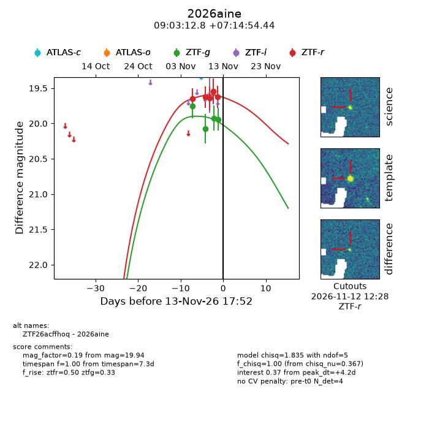
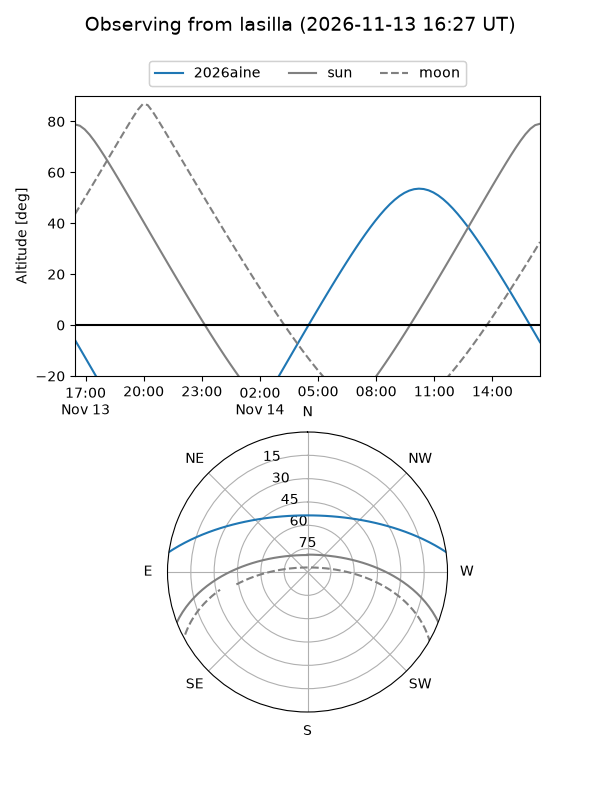
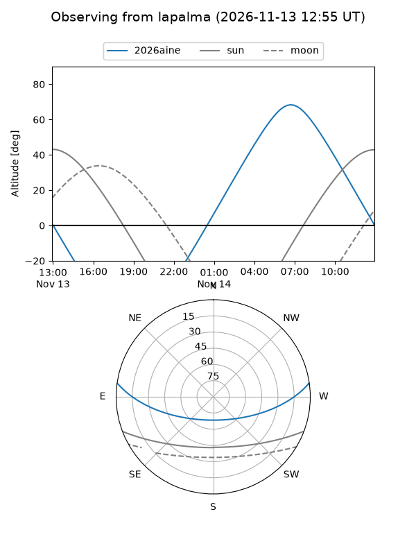
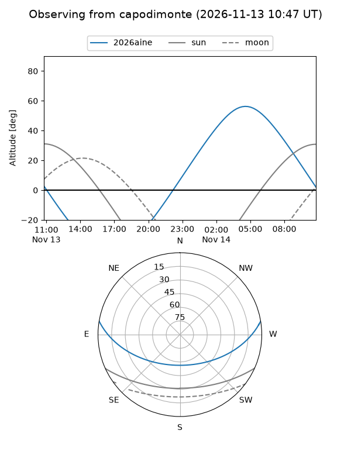
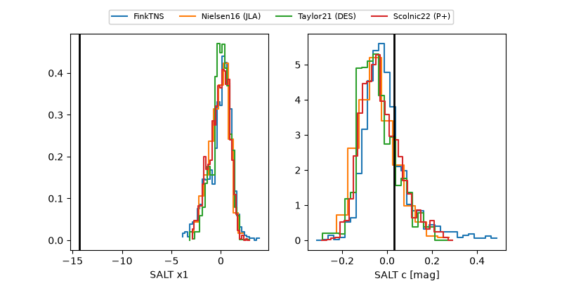

2026aine
Target 2026aine at 2026-11-13 17:58
Aliases and brokers:
FINK-ZTF: ztf.fink-portal.org/ZTF26acffhoq
Lasair-ZTF: lasair-ztf.lsst.ac.uk/objects/ZTF26acffhoq
ALeRCE-ZTF: alerce.online/object/ZTF26acffhoq
YSE-PZ: ziggy.ucolick.org/yse/transient_detail/2026aine
TNS name: wis-tns.org/object/2026aine
Direct TNS query: direct search
alt names
ZTF26acffhoq (ztf,fink_ztf)
2026aine (tns,yse)
Coordinates:
equatorial (ra, dec) = 135.8034,+7.24846
equatorial (HMS+DMS) = 09:03:12.81,+07:14:54.44
galactic (l, b) = (222.0557,+32.52422)
Flags:
peak dt: +4.2
Photometry:
last ztfg=19.94, ztfr=19.62
4 ztfg, 5 ztfr detections
Lightcurve

Visibility



Additional plots
